Code
# Configuración
## Establecer una semilla aleatoria para el análisis
set.seed(2024)
## Impedir que los números grandes se muestren con notación científica
options(scipen = 999)Resultados
Subproceso destinado a agrupar observaciones en base a su similitud, de modo que las observaciones pertenecientes a cada uno de los grupos tengan características similares.
# Configuración
## Establecer una semilla aleatoria para el análisis
set.seed(2024)
## Impedir que los números grandes se muestren con notación científica
options(scipen = 999)Se llevó a cabo un conjunto de análisis cluster (5 en total), siguiendo la siguiente metodología
Durante la fase de análisis exploratorio se evidenció una marcada diferencia en la mortalidad relacionada con alcohol entre ambos sexos, por lo que se analizará el dataset data_lab para controlar el efecto de la variable Sex.
Además, se observaron problemas de valores atípicos en los distintos conjuntos de datos considerados para el análisis. Estas observaciones podrían ser muy interesantes para nuestro análisis, porque pueden contener información sobre los factores de riesgo más asociados a la mortalidad por alcohol.
data_lab: con todos los datos (incluyendo outliers), ydata_inliers_lab: con datos recortados (sin outliers).# Ingesta
data_lab <- readRDS(here::here('data', 'lab', 'data_lab.rds'))
data_inliers_lab <- readRDS(here::here('data', 'lab', 'data_inliers_lab.rds'))Para impedir que las diferencias de magnitud entre las variables numéricas alterase la agrupación, se escalaron los valores de ambos datasets.
## Datos totales
data_std <- scale(data_lab[,-(1:2)])
## Datos recortados
data_inliers_std <- scale(data_inliers_lab[,-(1:2)])Se utilizó la función stat::dist() con los parámetros por defecto (distancia euclídea):
## Datos totales
data_dist <- dist(data_std)
## Datos recortados
data_inliers_dist <- dist(data_inliers_std)data_lab
## Datos totales
GGally::ggpairs(data_lab[2:10], ggplot2::aes(colour = Sex)) +
ggplot2::ggtitle('Objeto data_lab', subtitle = 'Análisis de correlación')data_inliers_lab
# Datos recortados
GGally::ggpairs(data_inliers_lab[2:10], ggplot2::aes(colour = Sex)) +
ggplot2::ggtitle('Objeto data_inliers_lab', subtitle = 'Análisis de correlación')Valoramos en primer lugar si es pertinente realizar un análisis de agrupación de los datos. Para ello:
Este mapa del calor reordena la matriz de tal manera que observaciones similares se localizan cerca. Visualmente, se observan entre tres y cinco grandes clusters, que son más evidentes cuando se eliminan los outliers.
data_lab
## Datos totales
factoextra::fviz_dist(
data_dist,
lab_size = .1,
show_labels = FALSE
) +
ggplot2::ggtitle(
label = "Evaluación visual de tendencia de agrupación (VAT)",
subtitle = 'Datos completos (`data_lab`)'
)data_inliers_lab
## Datos recortados
factoextra::fviz_dist(
data_inliers_dist,
lab_size = .1,
show_labels = FALSE
) +
ggplot2::ggtitle(
label = "Evaluación visual de tendencia de agrupación (VAT)",
subtitle = 'Datos sin outliers (`data_inliers_lab`)'
)En ambos supuestos (datos totales y recortados), el valor es distinto de 0.5, por lo que suponemos que las distancias observadas entre el conjunto de datos aleatorio y el conjunto de datos real no se debe al azar, y, por tanto, existe tendencia de agrupación.
data_lab
## Datos totales
clustertend::hopkins(
data_std,
n = nrow(data_std) - 1
)$H
[1] 0.1920877data_inliers_lab
## Datos recortados
clustertend::hopkins(
data_inliers_std,
n = nrow(data_inliers_std) - 1
)Warning in clustertend::hopkins(data_inliers_std, n = nrow(data_inliers_std) -
: Package `clustertend` is deprecated. Use package `hopkins` instead.$H
[1] 0.3202928Se utilizó el método de agrupación por \(k\)-medias.
data_lab
En el dataset completo, la mayoría de métodos sitúa el óptimo de clústeres entre 2 y 4.
## Datos totales
nb <- NbClust::NbClust(
data = data_std,
distance = 'euclidean',
min.nc = 2,
max.nc = 15,
method = "kmeans",
index = "all"
)*** : The Hubert index is a graphical method of determining the number of clusters.
In the plot of Hubert index, we seek a significant knee that corresponds to a
significant increase of the value of the measure i.e the significant peak in Hubert
index second differences plot.
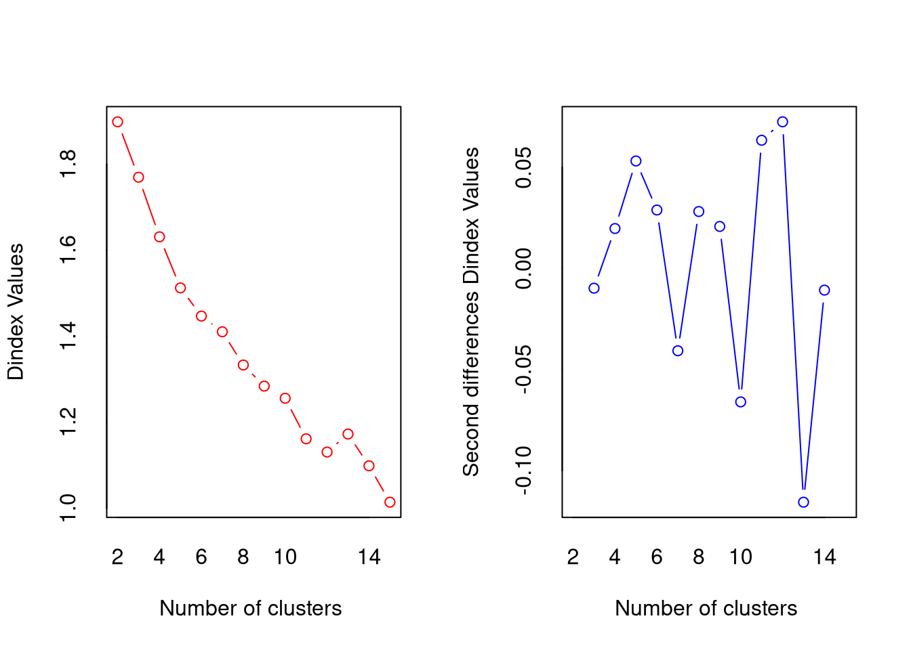
*** : The D index is a graphical method of determining the number of clusters.
In the plot of D index, we seek a significant knee (the significant peak in Dindex
second differences plot) that corresponds to a significant increase of the value of
the measure.
*******************************************************************
* Among all indices:
* 8 proposed 2 as the best number of clusters
* 3 proposed 3 as the best number of clusters
* 5 proposed 4 as the best number of clusters
* 1 proposed 5 as the best number of clusters
* 2 proposed 12 as the best number of clusters
* 2 proposed 14 as the best number of clusters
* 3 proposed 15 as the best number of clusters
***** Conclusion *****
* According to the majority rule, the best number of clusters is 2
******************************************************************* data_inliers_lab
En el dataset sin outliers, el número óptimo de clústeres está entre 2 y 3.
## Datos recortados
nb_inliers <- NbClust::NbClust(
data = data_inliers_std,
distance = 'euclidean',
min.nc = 2,
max.nc = 15,
method = "kmeans",
index = "all"
)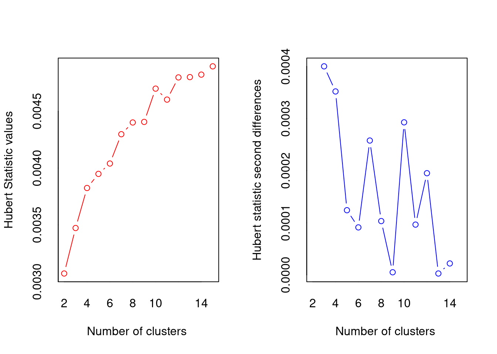
*** : The Hubert index is a graphical method of determining the number of clusters.
In the plot of Hubert index, we seek a significant knee that corresponds to a
significant increase of the value of the measure i.e the significant peak in Hubert
index second differences plot.
*** : The D index is a graphical method of determining the number of clusters.
In the plot of D index, we seek a significant knee (the significant peak in Dindex
second differences plot) that corresponds to a significant increase of the value of
the measure.
*******************************************************************
* Among all indices:
* 6 proposed 2 as the best number of clusters
* 7 proposed 3 as the best number of clusters
* 2 proposed 4 as the best number of clusters
* 1 proposed 5 as the best number of clusters
* 1 proposed 7 as the best number of clusters
* 1 proposed 10 as the best number of clusters
* 1 proposed 11 as the best number of clusters
* 1 proposed 12 as the best number of clusters
* 3 proposed 15 as the best number of clusters
***** Conclusion *****
* According to the majority rule, the best number of clusters is 3
******************************************************************* Dado que no podemos encontrar un nivel de clústeres óptimo en base a los resultados, exploraremos las opciones más repetidas:
data_lab, ydata_inliers_lab.data_lab
## Datos totales
data_km2 <- kmeans(data_std, centers = 2)
data_km3 <- kmeans(data_std, centers = 3)
data_km4 <- kmeans(data_std, centers = 4)data_inliers_lab
## Datos recortados
data_inliers_km2 <- kmeans(data_inliers_std, centers = 2)
data_inliers_km3 <- kmeans(data_inliers_std, centers = 3)data_lab
data_labResultados de los modelos de agrupación para data_lab
El resultado de la agrupación con 2 clústeres es el siguiente
## Datos totales
data_km2K-means clustering with 2 clusters of sizes 47, 53
Cluster means:
Deaths Population AgeAdjustedDeathRate PercentageOfTotalDeaths
1 0.3682663 0.008739900 0.6558077 0.3692895
2 -0.3265758 -0.007750478 -0.5815653 -0.3274831
HeavyDrinkingAdults BingeDrinkingFrecuencyAdults BingeDrinkingIntensityAdults
1 0.2401494 0.7865214 0.9518905
2 -0.2129627 -0.6974813 -0.8441293
BingeDrinkingPrevalenceAdults
1 0.8775595
2 -0.7782131
Clustering vector:
[1] 2 1 2 1 2 1 1 2 2 1 2 1 2 2 1 2 2 1 2 1 2 1 2 1 1 2 2 1 1 2 1 2 2 1 1 2 2
[38] 1 2 2 1 2 2 1 2 1 2 1 2 1 1 2 1 2 1 2 1 2 1 2 2 1 2 1 1 2 2 1 2 1 2 1 1 2
[75] 1 2 1 2 2 1 1 2 1 2 1 2 2 2 2 1 2 1 1 2 1 2 2 1 1 2
Within cluster sum of squares by cluster:
[1] 313.382 207.734
(between_SS / total_SS = 34.2 %)
Available components:
[1] "cluster" "centers" "totss" "withinss" "tot.withinss"
[6] "betweenss" "size" "iter" "ifault" table(data_km2$cluster)
1 2
47 53 La agrupación con dos clústeres explica un 34.2% de la variabilidad total. Ambos clústeres tienen aproximadamente el mismo número de elementos.
## Datos totales
cl_kcca2 <- flexclust::as.kcca(data_km2, data_std)
flexclust::barplot(cl_kcca2)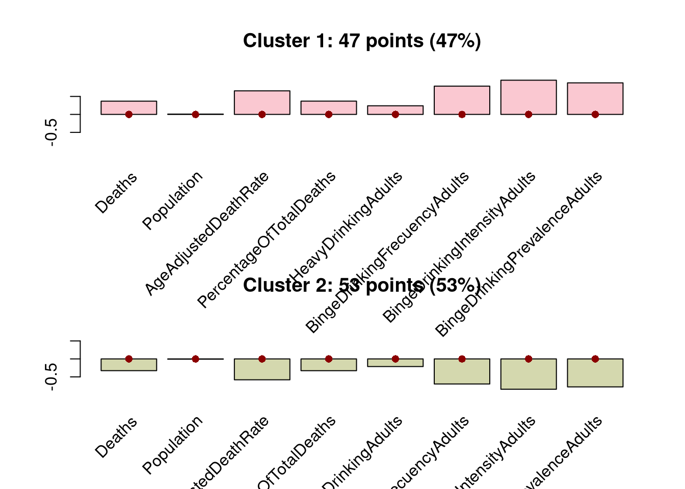
Alcohol del CDI: valores elevados frente a valores bajosPodemos explorar cómo se comporta cada cluster variable a variable con el siguiente gráfico
flexclust::barplot(cl_kcca2, bycluster = FALSE)El resultado explica sólo un tercio de la variabilidad total, por lo que no es el ideal.
La agrupación con tres clústeres explica un 53.9% de la variabilidad total. Los clústeres están muy desequilibrados, con uno de ellos con 3 elementos (los valores outliers)
## Datos totales
data_km3K-means clustering with 3 clusters of sizes 3, 53, 44
Cluster means:
Deaths Population AgeAdjustedDeathRate PercentageOfTotalDeaths
1 4.3130989 4.19117974 -0.07723505 4.3081446
2 -0.3694474 -0.08772454 -0.57798481 -0.3699294
3 0.1509412 -0.18009406 0.70147500 0.1518597
HeavyDrinkingAdults BingeDrinkingFrecuencyAdults BingeDrinkingIntensityAdults
1 -0.08912443 -0.4226871 0.08665392
2 -0.22990896 -0.6788862 -0.81480631
3 0.28301245 0.8465688 0.97556302
BingeDrinkingPrevalenceAdults
1 0.1021575
2 -0.7484900
3 0.8946250
Clustering vector:
[1] 2 3 2 3 2 3 3 2 1 1 2 3 2 2 3 2 2 3 2 3 2 3 2 3 3 2 2 3 3 2 3 2 2 3 3 2 2
[38] 3 2 2 3 2 2 3 2 3 2 3 2 3 3 2 3 2 3 2 3 2 2 2 2 3 2 3 3 2 2 3 2 3 2 3 3 2
[75] 3 2 3 2 2 3 3 2 3 2 1 2 2 2 2 3 2 3 3 2 3 2 2 3 3 2
Within cluster sum of squares by cluster:
[1] 35.42998 174.80886 154.98956
(between_SS / total_SS = 53.9 %)
Available components:
[1] "cluster" "centers" "totss" "withinss" "tot.withinss"
[6] "betweenss" "size" "iter" "ifault" table(data_km3$cluster)
1 2 3
3 53 44 La presencia del grupo con los outliers (cluster 1) dificulta la interpretación visual de los otros dos grupos, tanto en el gráfico global como por variables
## Datos totales
cl_kcca3 <- flexclust::as.kcca(data_km3, data_std)
flexclust::barplot(cl_kcca3)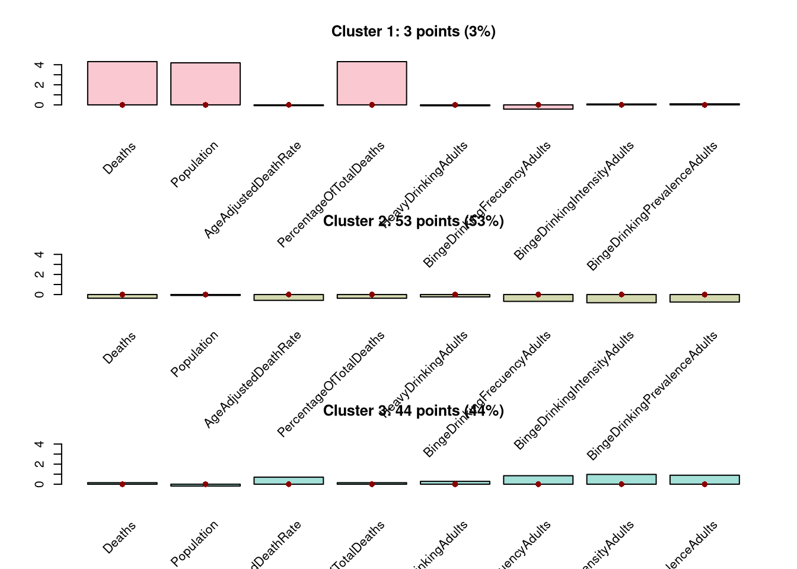
flexclust::barplot(cl_kcca3, bycluster = FALSE)El resultado está genera una agrupación muy desbalanceada, por lo que tampoco parece el modelo óptimo.
La agrupación con cuatro clústeres explica un 60.3% de la variabilidad total. De nuevo, una de las clases tiene muy pocos elementos (outliers)
## Datos totales
data_km4K-means clustering with 4 clusters of sizes 34, 44, 19, 3
Cluster means:
Deaths Population AgeAdjustedDeathRate PercentageOfTotalDeaths
1 -0.3061696 0.1239105 -0.70617977 -0.3063393
2 0.1509412 -0.1800941 0.70147500 0.1518597
3 -0.4826812 -0.4664399 -0.34858329 -0.4837223
4 4.3130989 4.1911797 -0.07723505 4.3081446
HeavyDrinkingAdults BingeDrinkingFrecuencyAdults BingeDrinkingIntensityAdults
1 -0.87551644 -0.5579573 -0.71049012
2 0.28301245 0.8465688 0.97556302
3 0.92538864 -0.8952852 -1.00147740
4 -0.08912443 -0.4226871 0.08665392
BingeDrinkingPrevalenceAdults
1 -0.9131593
2 0.8946250
3 -0.4538187
4 0.1021575
Clustering vector:
[1] 1 2 3 2 1 2 2 1 4 4 3 2 1 1 2 1 3 2 1 2 3 2 3 2 2 1 1 2 2 1 2 1 1 2 2 3 3
[38] 2 1 1 2 3 1 2 3 2 1 2 1 2 2 3 2 3 2 1 2 3 1 1 1 2 1 2 2 1 1 2 1 2 1 2 2 3
[75] 2 1 2 3 1 2 2 3 2 1 4 1 1 1 3 2 1 2 2 3 2 1 3 2 2 3
Within cluster sum of squares by cluster:
[1] 90.04538 154.98956 33.67188 35.42998
(between_SS / total_SS = 60.3 %)
Available components:
[1] "cluster" "centers" "totss" "withinss" "tot.withinss"
[6] "betweenss" "size" "iter" "ifault" table(data_km4$cluster)
1 2 3 4
34 44 19 3 El clúster que contiene los outliers también dificulta la interpretación de los grupos, aunque se intuye que se diferencian los siguientes cuatro grupos de estados en relación con los indicadores:
HeavyDrinkingAdults)## Datos totales
cl_kcca4 <- flexclust::as.kcca(data_km4, data_std)
flexclust::barplot(cl_kcca4)flexclust::barplot(cl_kcca4, bycluster = FALSE)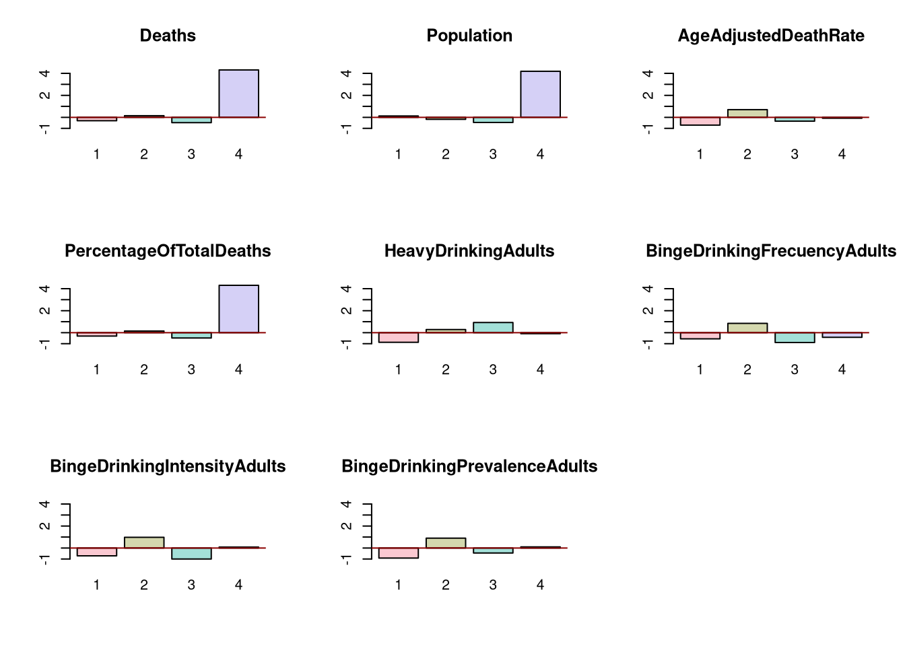
data_inliers_lab
data_inliers_labResultados de los modelos de agrupación para data_inliers_lab
El resultado de la agrupación con 2 clústeres es el siguiente
## Datos recortados
data_inliers_km2K-means clustering with 2 clusters of sizes 47, 38
Cluster means:
Deaths Population AgeAdjustedDeathRate PercentageOfTotalDeaths
1 -0.4589491 0.01354511 -0.5754245 -0.4594738
2 0.5676475 -0.01675316 0.7117093 0.5682965
HeavyDrinkingAdults BingeDrinkingFrecuencyAdults BingeDrinkingIntensityAdults
1 -0.2474507 -0.6719943 -0.7956304
2 0.3060574 0.8311508 0.9840692
BingeDrinkingPrevalenceAdults
1 -0.7391938
2 0.9142660
Clustering vector:
[1] 1 2 1 1 2 1 1 2 1 1 2 1 2 1 2 1 2 1 2 2 1 1 2 2 1 2 1 1 2 2 1 1 2 1 1 2 1 1
[39] 2 1 2 1 2 1 2 2 1 2 1 2 1 2 1 2 1 1 2 1 1 2 1 2 2 1 2 1 2 1 1 2 1 2 1 1 1 2
[77] 1 2 2 1 2 1 1 2 1
Within cluster sum of squares by cluster:
[1] 194.8370 220.0857
(between_SS / total_SS = 38.3 %)
Available components:
[1] "cluster" "centers" "totss" "withinss" "tot.withinss"
[6] "betweenss" "size" "iter" "ifault" table(data_inliers_km2$cluster)
1 2
47 38 La agrupación con dos clústeres explica un 38.32% de la variabilidad total. El primer clúster tiene un poco más de elementos que el segundo.
## Datos recortados
cl_inliers_kcca2 <- flexclust::as.kcca(data_inliers_km2, data_inliers_std)
flexclust::barplot(cl_inliers_kcca2)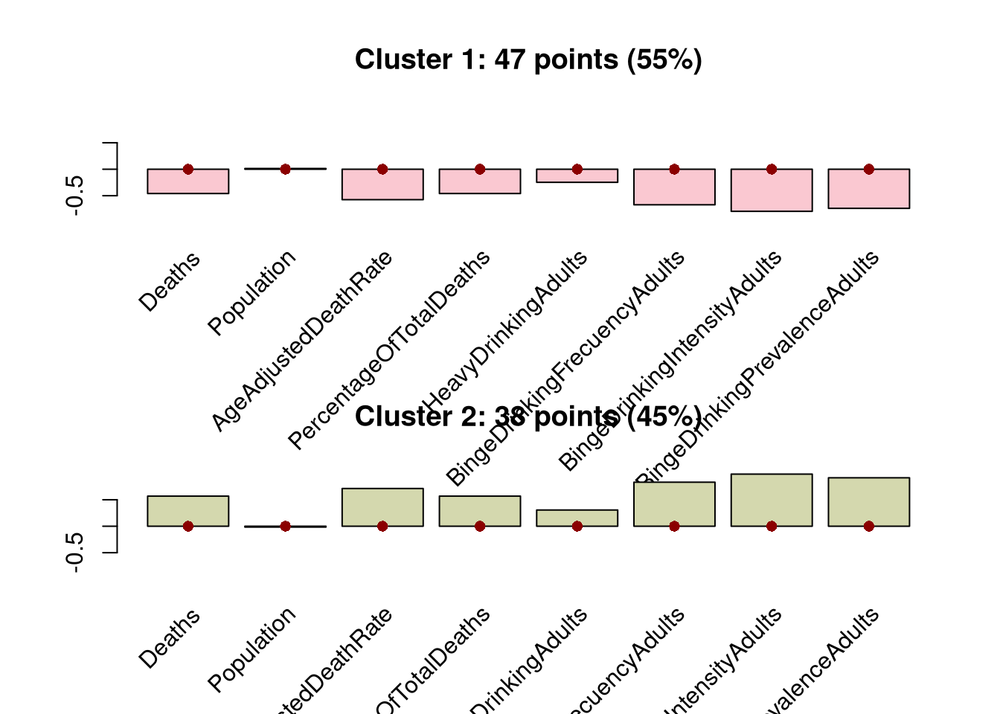
Alcohol del CDI: valores elevados frente a valores bajosPodemos explorar cómo se comporta cada cluster variable a variable con el siguiente gráfico
flexclust::barplot(cl_inliers_kcca2, bycluster = FALSE)El resultado explica un porcentaje muy pequeño de la variabilidad total, por lo que descartamos este modelo.
## Datos recortados
data_inliers_km3K-means clustering with 3 clusters of sizes 46, 21, 18
Cluster means:
Deaths Population AgeAdjustedDeathRate PercentageOfTotalDeaths
1 -0.4493276 0.04012181 -0.6287279 -0.4498983
2 -0.4025428 -0.79250443 0.8438625 -0.4000449
3 1.6179149 0.82205500 0.6222427 1.6164592
HeavyDrinkingAdults BingeDrinkingFrecuencyAdults BingeDrinkingIntensityAdults
1 -0.30556333 -0.6793351 -0.7957634
2 0.59375047 0.9167504 0.9828087
3 0.08817519 0.6665364 0.8870074
BingeDrinkingPrevalenceAdults
1 -0.7451478
2 0.9124341
3 0.8397601
Clustering vector:
[1] 1 2 2 1 2 1 1 3 1 1 2 1 2 1 3 1 2 1 2 3 1 1 3 2 1 2 1 1 2 2 1 1 2 1 1 3 1 1
[39] 3 1 3 1 2 1 3 2 1 2 1 2 1 2 1 3 1 1 3 1 1 2 1 3 3 1 3 1 2 1 1 3 1 3 1 1 1 2
[77] 1 3 3 1 2 1 1 3 1
Within cluster sum of squares by cluster:
[1] 179.27434 70.36247 59.31009
(between_SS / total_SS = 54.0 %)
Available components:
[1] "cluster" "centers" "totss" "withinss" "tot.withinss"
[6] "betweenss" "size" "iter" "ifault" table(data_inliers_km3$cluster)
1 2 3
46 21 18 La agrupación con dos clústeres explica un 54% de la variabilidad total. El primer cluster tiene más elementos que los otros dos juntos.
## Datos totales
cl_inliers_kcca3 <- flexclust::as.kcca(data_inliers_km3, data_inliers_std)
flexclust::barplot(cl_inliers_kcca3)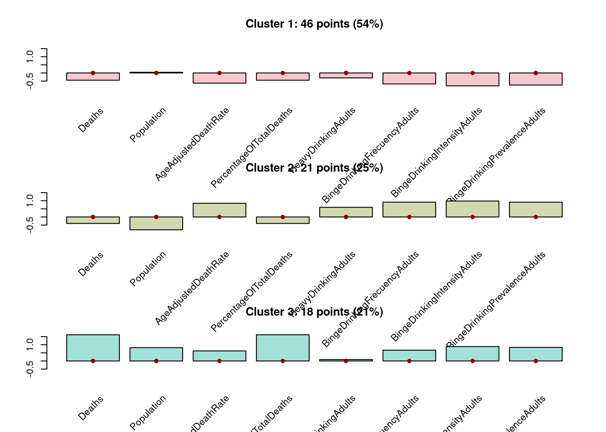
flexclust::barplot(cl_inliers_kcca3, bycluster = FALSE)data_lab
Los resultados de la evaluación de la importancia de las variables para los modelos para datos completos fueron los siguientes:
BingeDrinkingIntensityAdults, BingeDrinkingPrevalenceAdults, BingeDrinkingFrecuencyAdults)HeavyDrinkingAdults), seguida de las tres variables relacionadas con borracheras (BingeDrinkingIntensityAdults, BingeDrinkingPrevalenceAdults, BingeDrinkingFrecuencyAdults)## Datos totales
importance <- FeatureImpCluster::FeatureImpCluster(
cl_kcca2,
data.table::as.data.table(data_std)
)
flexclust::plot(importance)## Datos recortados
importance_inliers <- FeatureImpCluster::FeatureImpCluster(
cl_inliers_kcca2,
data.table::as.data.table(data_inliers_std))
flexclust::plot(importance_inliers)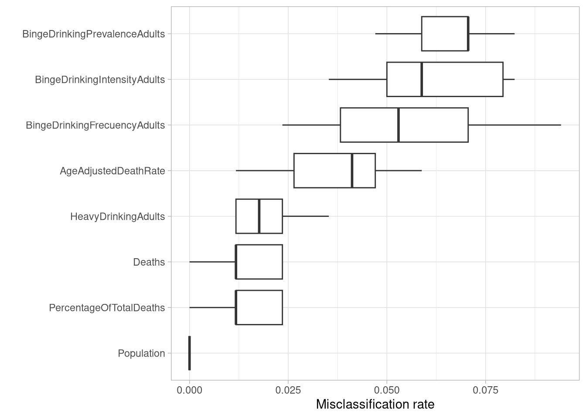
En el modelo de 2 clústeres para datos completos, las variables más importantes para establecer la agrupación fueron las relacionadas con las características de las borracheras (BingeDrinkingIntensityAdults, BingeDrinkingPrevalenceAdults, BingeDrinkingFrecuencyAdults).
## Datos totales
importance <- FeatureImpCluster::FeatureImpCluster(
cl_kcca3,
data.table::as.data.table(data_std)
)
flexclust::plot(importance)## Datos recortados
importance_inliers <- FeatureImpCluster::FeatureImpCluster(
cl_inliers_kcca3,
data.table::as.data.table(data_inliers_std))
flexclust::plot(importance_inliers)
En el modelo de 3 clústeres para datos completos, las variables más importantes para establecer la agrupación fueron las relacionadas con las características de las borracheras (BingeDrinkingIntensityAdults, BingeDrinkingPrevalenceAdults, BingeDrinkingFrecuencyAdults).
## Datos totales
importance <- FeatureImpCluster::FeatureImpCluster(
cl_kcca4,
data.table::as.data.table(data_std)
)
flexclust::plot(importance)En el modelo con 4 clústeres, la variable más importante con diferencia fue la de grandes bebedores (HeavyDrinkingAdults), seguida de las tres variables relacionadas con borracheras (BingeDrinkingIntensityAdults, BingeDrinkingPrevalenceAdults, BingeDrinkingFrecuencyAdults)
data_inliers_lab
Los resultados de la evaluación de la importancia de las variables para los modelos para datos recortados fueron los siguientes:
BingeDrinkingIntensityAdults, BingeDrinkingPrevalenceAdults, BingeDrinkingFrecuencyAdults)Deaths y PercentageOfTotalDeaths), seguido de la prevalencia de borracheras (BingeDrinkingPrevalenceAdults).## Datos recortados
importance_inliers <- FeatureImpCluster::FeatureImpCluster(
cl_inliers_kcca2,
data.table::as.data.table(data_inliers_std))
flexclust::plot(importance_inliers)
En el modelo de 2 clústeres para datos recortados, las variables más importantes para establecer la agrupación fueron las relacionadas con las características de las borracheras (BingeDrinkingIntensityAdults, BingeDrinkingPrevalenceAdults, BingeDrinkingFrecuencyAdults).
## Datos recortados
importance_inliers <- FeatureImpCluster::FeatureImpCluster(
cl_inliers_kcca3,
data.table::as.data.table(data_inliers_std))
flexclust::plot(importance_inliers)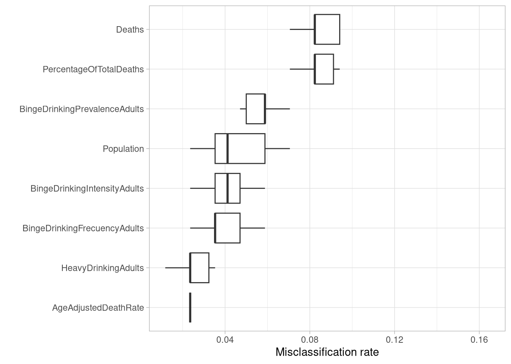
En el modelo de 3 clústeres para datos recortados, las variables más importantes para establecer la agrupación fueron las relacionadas el número de muertes relacionadas con alcohol (Deaths y PercentageOfTotalDeaths), seguido de la prevalencia de borracheras (BingeDrinkingPrevalenceAdults).
## Datos totales
factoextra::fviz_cluster(
data_km2,
data_std,
labelsize = 5,
main = "k=2 grupos, datos completos",
geom = "point"
) +
ggrepel::geom_text_repel(
label = paste(
data_lab$State,
data_lab$AgeAdjustedDeathRate,
sep = "_"),
size = 1.5)El modelo de 2 clústeres en los datos completos está fuertemente influenciado por los outliers, y crea unos clústers con poco sentido.
## Datos totales
factoextra::fviz_cluster(
data_inliers_km2,
data_inliers_std,
labelsize = 5,
main = "k=2 grupos, datos recortados (sin outliers)",
geom = "point"
) +
ggrepel::geom_text_repel(
label = paste(
data_inliers_lab$State,
data_inliers_lab$AgeAdjustedDeathRate,
sep = "_"),
size = 1.5)Al eliminar los outliers, el modelo agrupa los datos en dos grandes bloques, sin solapamientos
## Datos totales
factoextra::fviz_cluster(
data_km3,
data_std,
labelsize = 5,
main = "k=3 grupos (datos completos)",
geom = "point"
) +
ggrepel::geom_text_repel(
label = paste(
data_lab$State,
data_lab$AgeAdjustedDeathRate,
sep = "_"),
size = 1.5)El modelo de tres clústeres para los datos completos separa un grupo con los outliers, y otros dos grupos dentro del resto de los datos.
## Datos recortados
factoextra::fviz_cluster(
data_inliers_km3,
data_inliers_std,
labelsize = 5,
main = "k=3 grupos, datos recortados (sin outliers)",
geom = "point"
) +
ggrepel::geom_text_repel(
label = paste(
data_inliers_lab$State,
data_inliers_lab$AgeAdjustedDeathRate,
sep = "_"),
size = 1.5)Al eliminar los outliers, el modelo de tres clústeres es capaz de separar tres grupos de datos con una cierta coherencia visual.
El modelo de cuatro clústeres para los datos completos separa un grupo con los outliers, y dos de los grupos presentan un alto grado de solapamiento en la representación bidimensional.
## Datos totales
factoextra::fviz_cluster(
data_km4,
data_std,
labelsize = 5,
main = "k=4 grupos (datos completos)",
geom = "point"
) +
ggrepel::geom_text_repel(
label = paste(
data_lab$State,
data_lab$AgeAdjustedDeathRate,
sep = "_"),
size = 1.5)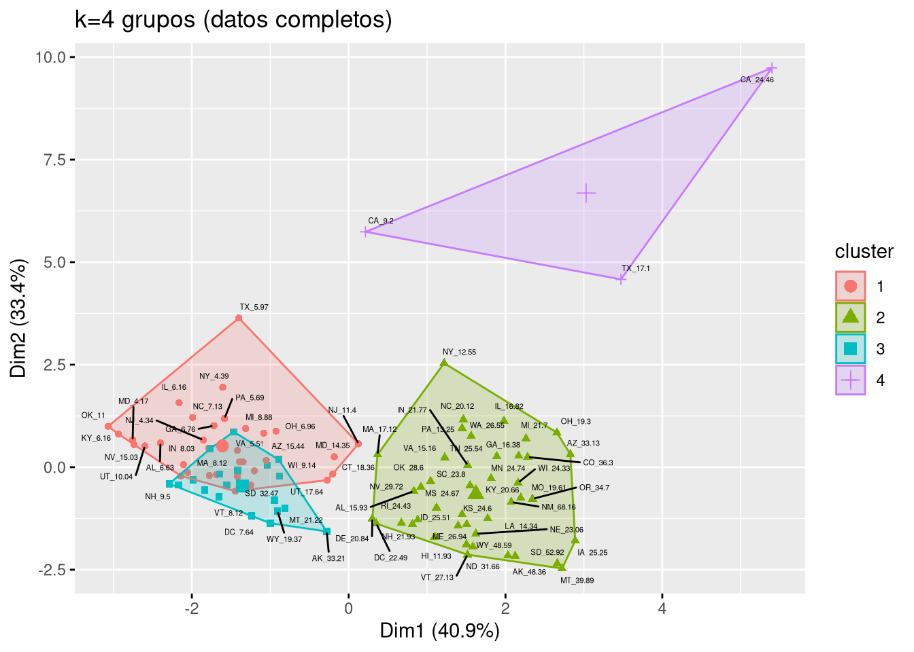
Al representarlo en tres dimensiones, se observa que el solapamiento es menor. Por ejemplo, eligiendo las tres variables con mayor importancia para la agrupación del modelo \(k = 4\), se puede obtener este gráfico interactivo:
df <- data_lab[1:10]
df$cluster <- factor(data_km4$cluster)
p <- plotly::plot_ly(
df,
x = ~HeavyDrinkingAdults,
y = ~BingeDrinkingIntensityAdults,
z = ~BingeDrinkingFrecuencyAdults,
mode = 'markers',
color = ~cluster,
hoverinfo = 'text',
text = ~paste(
'</br> State:', State,
'</br> Sex:', Sex,
'</br> Heavy Drinking Adults:', HeavyDrinkingAdults,
'</br> Binge Drinking Intensity Adults:', BingeDrinkingIntensityAdults,
'</br> Binge Drinking Frecuency Adults:', BingeDrinkingFrecuencyAdults
)
) |>
plotly::add_markers(size = 1.5)
pPara la validación interna se utilizó el diagrama de silueta, con los siguientes resultados:
| Modelo | Datos | Evaluación del gráfico de silueta |
|---|---|---|
| \(k=2\) | Completos | Los dos clústeres tienen un rendimiento aceptable, aunque en el caso del cluster 1 es inferior a silueta media. |
| \(k=3\) | Completos | Dos de los clústeres, tienen un rendimiento bueno, y el cluster más pequeño tiene un rendimiento muy inferior a lo esperado |
| \(k=4\) | Completos | Sólo los clústeres 2 y 3 superaron la silueta media; todos los demás quedaron por debajo de lo deseable. |
| \(k=2\) | Recortados | Ambos dos clústeres tienen un rendimiento bueno, por encima de la silueta media |
| \(k=3\) | Recortados | Bastante equilibrado; todos los clústeres tienen un ancho de silueta medio igual al ancho de silueta medio. |
## Datos totales
sk2 <- cluster::silhouette(
data_km2$cluster,
data_dist)
sk2_mean <- mean(sk2[,3])
# gráfico de silueta
flexclust::plot(
sk2,
main = "Silhouette plot - Kmeans k=2 (datos completos)",
cex.names = 0.8,
col = 1:2,
nmax = 100,
do.clust.stat = TRUE)
abline(v = sk2_mean, col = "darkblue", lty = 3)Para el modelo de \(k=2\) con datos completos, los dos clústeres tienen un rendimiento aceptable, aunque en el caso del cluster 1 es inferior a silueta media.
## Datos totales
sk2_inliers <- cluster::silhouette(
data_inliers_km2$cluster,
data_inliers_dist)
sk2_inliers_mean <- mean(sk2_inliers[,3])
# gráfico de silueta
flexclust::plot(
sk2_inliers,
main = "Silhouette plot - Kmeans k=2 (datos recortados, sin outliers)",
cex.names = 0.8,
col = 1:2,
nmax = 100,
do.clust.stat = TRUE)
abline(v = sk2_inliers_mean, col = "darkblue", lty = 3)Para el modelo de \(k=2\) con datos recortados, ambos dos clústeres tienen un rendimiento bueno, por encima de la silueta media.
## Datos totales
sk3 <- cluster::silhouette(
data_km3$cluster,
data_dist)
sk3_mean <- mean(sk3[,3])
# gráfico de silueta
flexclust::plot(
sk3,
main = "Silhouette plot - Kmeans k=3 (datos completos)",
cex.names = 0.8,
col = 1:3,
nmax = 100,
do.clust.stat = TRUE)
abline(v = sk3_mean, col = "darkblue", lty = 3)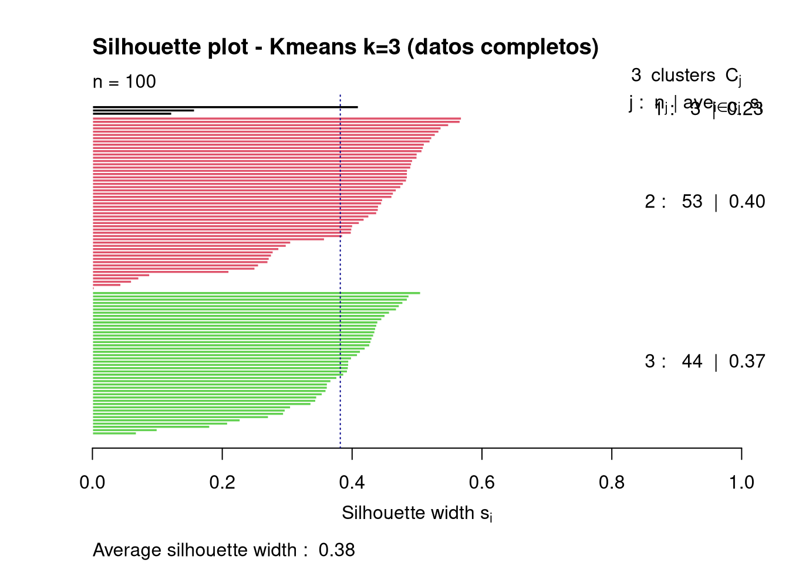
Para el modelo de \(k=3\) con datos completos, dos de los clústeres, tienen un rendimiento bueno, y el cluster más pequeño tiene un rendimiento muy inferior a lo esperado.
## Datos totales
sk3_inliers <- cluster::silhouette(
data_inliers_km3$cluster,
data_inliers_dist)
sk3_inliers_mean <- mean(sk3_inliers[,3])
# gráfico de silueta
flexclust::plot(
sk3_inliers,
main = "Silhouette plot - Kmeans k=3 (datos recortados, sin outliers)",
cex.names = 0.8,
col = 1:3,
nmax = 100,
do.clust.stat = TRUE)
abline(v = sk3_inliers_mean, col = "darkblue", lty = 3)El modelo de \(k=3\) con datos recortados es bastante equilibrado. Todos los clústeres tienen un ancho de silueta medio igual al ancho de silueta medio.
## Datos totales
sk4 <- cluster::silhouette(
data_km4$cluster,
data_dist)
sk4_mean <- mean(sk4[,3])
# gráfico de silueta
flexclust::plot(
sk4,
main = "Silhouette plot - Kmeans k=4 (datos completos)",
cex.names = 0.8,
col = 1:4,
nmax = 100,
do.clust.stat = TRUE)
abline(v = sk4_mean, col = "darkblue", lty = 3)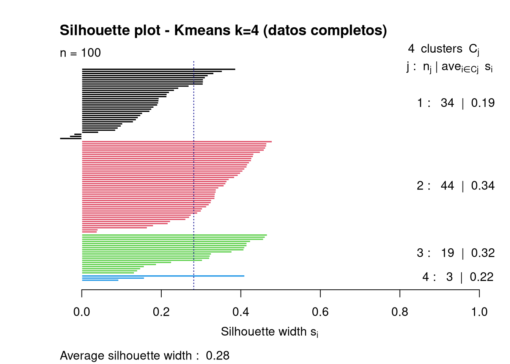
Para el modelo de \(k=4\) con datos completos, sólo los clústeres 2 y 3 superaron la silueta media. Todos los demás quedaron por debajo de lo deseable.
Se utilizaron las siguientes variables para la validación externa de las agrupaciones:
Sex.AgeAdjustedDeathRate.AgeAdjustedDeathRate.Los dos modelos \(k=2\), tanto para datos completos como recortados, se ajustan bastante bien a los niveles de la variable Sex, por lo que capturan una información similar a esta variable.
Los modelos \(k=3\) y \(k=4\) se relacionan mal con la variable instrumental creada discretizando los valores de la variable AgeAdjustedDeathRate, con lo que es razonable suponer que capturan información no contenida en estas variable.
# Creación de las variables instrumentales para data_lab
# Variable instrumental de 2 niveles
data_lab$Sex <- as.factor(data_lab$Sex)
# Variable instrumental de 3 niveles
AgeAdjustedDeathRate_3levels_cuts <- recipes::discretize(
data_lab$AgeAdjustedDeathRate,
cuts = 3,
labels = c('Mortalidad baja', 'Mortalidad media', 'Mortalidad alta'),
prefix = ''
)
data_lab$AgeAdjustedDeathRate_fct3 <-
predict(AgeAdjustedDeathRate_3levels_cuts, data_lab$AgeAdjustedDeathRate) |>
as.factor()
# Variable instrumental de 4 niveles
AgeAdjustedDeathRate_4levels_cuts <- recipes::discretize(
data_lab$AgeAdjustedDeathRate,
cuts = 4,
labels = c('Mortalidad muy baja', 'Mortalidad baja', 'Mortalidad alta', 'Mortalidad muy alta'),
prefix = ''
)
data_lab$AgeAdjustedDeathRate_fct4 <-
predict(AgeAdjustedDeathRate_4levels_cuts, data_lab$AgeAdjustedDeathRate) |>
as.factor()
# Limpieza de variables temporales intermedias
rm(list = c(
'AgeAdjustedDeathRate_3levels_cuts',
'AgeAdjustedDeathRate_4levels_cuts'
))# Creación de las variables instrumentales para data_inliers_lab
# Variable instrumental de 2 niveles
data_inliers_lab$Sex <- as.factor(data_inliers_lab$Sex)
# Variable instrumental de 3 niveles
AgeAdjustedDeathRate_inliers_3levels_cuts <- recipes::discretize(
data_inliers_lab$AgeAdjustedDeathRate,
cuts = 3,
labels = c('Mortalidad baja', 'Mortalidad media', 'Mortalidad alta'),
prefix = ''
)
data_inliers_lab$AgeAdjustedDeathRate_fct3 <-
predict(
AgeAdjustedDeathRate_inliers_3levels_cuts,
data_inliers_lab$AgeAdjustedDeathRate
) |>
as.factor()
# Limpieza de variables temporales intermedias
rm(list = c(
'AgeAdjustedDeathRate__inliers_3levels_cuts'
))Ambos modelos cluster (tanto el de datos completos como el de datos recortados) separan perfectamente a las mujeres, y se equivocan con un pequeño porcentaje de los hombres (\(6\%\) en datos completos, \(7.3\%\) en datos recortados):
# Modelo de datos completos
table(
data_lab$Sex,
data_km2$cluster
)
1 2
Female 0 50
Male 47 3# Modelo de datos recortados
table(
data_inliers_lab$Sex,
data_inliers_km2$cluster
)
1 2
Female 44 0
Male 3 38factoextra::fviz_cluster(
data_km2,
data_std,
labelsize = 5,
# main = "k=2 grupos",
geom = "point",
ggtheme = ggplot2::theme_bw()
) +
ggplot2::ggtitle(
label = 'Modelo con K=2 grupos',
subtitle = 'Conjunto de datos completo (con outliers)'
) +
ggrepel::geom_text_repel(
label = paste(
data_lab$State,
data_lab$Sex,
sep = "_"),
size = 1.5,
colour = c("darkgreen", 'darkred')[data_lab$Sex])El modelo con datos completos separa hombres y mujeres, sobreajustándose por los outliers detectados. Comete errores en la clasificación de tres observaciones de hombres, con valores anormalmente bajos de los indicadores relacionados con el alcohol.
# Modelo de datos completos
factoextra::fviz_cluster(
data_inliers_km2,
data_inliers_std,
labelsize = 5,
# main = "k=2 grupos",
geom = "point",
ggtheme = ggplot2::theme_bw()
) +
ggplot2::ggtitle(
label = 'Modelo con K=2 grupos',
subtitle = 'Conjunto de datos recortado (sin outliers)'
) +
ggrepel::geom_text_repel(
label = paste(
data_inliers_lab$State,
data_inliers_lab$Sex,
sep = "_"),
size = 1.5,
colour = c("darkred", 'darkblue')[data_inliers_lab$Sex])El modelo con datos recortados separa hombres y mujeres, sin el sobreajuste impuesto por los outliers. Comete errores en la clasificación de tres observaciones de hombres, con valores anormalmente bajos de los indicadores relacionados con el alcohol.
Para ver el nivel de acuerdo de la agrupación con la clasificación, utilizamos el índice de Rand
# Datos completos
rand2 <- fpc::cluster.stats(
d = data_dist,
alt.clustering = as.numeric(data_lab$Sex),
clustering = as.numeric(data_km2$cluster))
rand2$corrected.rand[1] 0.8824166# Datos recortados
rand2_inliers <- fpc::cluster.stats(
d = data_inliers_dist,
alt.clustering = as.numeric(data_inliers_lab$Sex),
clustering = as.numeric(data_inliers_km2$cluster))
rand2_inliers$corrected.rand[1] 0.8621841Se observan unos valores elevados del estadístico de Rand, por lo que las observaciones incluidas en los clústeres son muy similares entre sí, tanto para los modelos de datos completos como para los de datos recortados.
Ambos modelos cluster (tanto el de datos completos como el de datos recortados) separan mal los tres niveles de la variable AgeAdjustedDeathRate_fct3, con un importante número de discordancias entre lo esperado y lo observado:
# Modelo de datos completos
table(
data_lab$AgeAdjustedDeathRate_fct3,
data_km3$cluster
)
1 2 3
Mortalidad baja 1 33 0
Mortalidad media 1 17 15
Mortalidad alta 1 3 29# Modelo de datos recortados
table(
data_inliers_lab$AgeAdjustedDeathRate_fct3,
data_inliers_km3$cluster
)
1 2 3
Mortalidad baja 29 0 0
Mortalidad media 14 6 8
Mortalidad alta 3 15 10factoextra::fviz_cluster(
data_km3,
data_std,
labelsize = 5,
# main = "k=2 grupos",
geom = "point",
ggtheme = ggplot2::theme_bw()
) +
ggplot2::ggtitle(
label = 'Modelo con K=3 grupos',
subtitle = 'Conjunto de datos completo (con outliers)'
) +
ggrepel::geom_text_repel(
label = paste(
data_lab$State,
data_lab$AgeAdjustedDeathRate_fct3,
sep = "_"),
size = 1.5,
colour = c("darkred", 'darkgreen', 'darkblue')[data_lab$AgeAdjustedDeathRate_fct3])El modelo de datos completos identifica razonablemente bien a las observaciones con mortalidad alta, pero a costa de equivocarse mucho en las que tiene mortalidad media y baja..
# Modelo de datos completos
factoextra::fviz_cluster(
data_inliers_km3,
data_inliers_std,
labelsize = 5,
geom = "point",
ggtheme = ggplot2::theme_bw()
) +
ggplot2::ggtitle(
label = 'Modelo con K=3 grupos',
subtitle = 'Conjunto de datos recortado (sin outliers)'
) +
ggrepel::geom_text_repel(
label = paste(
data_inliers_lab$State,
data_inliers_lab$AgeAdjustedDeathRate_fct3,
sep = "_"),
size = 1.5,
colour = c("darkred", 'darkgreen', 'darkblue')[data_inliers_lab$AgeAdjustedDeathRate_fct3])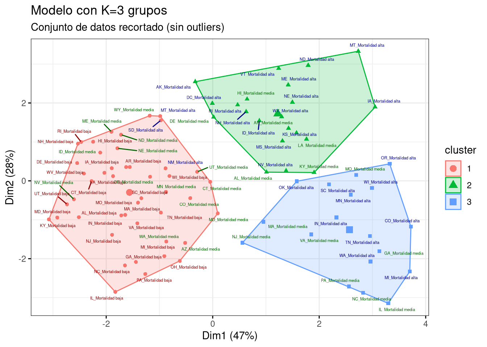
El modelo con datos recortados no está separando adecuadamente los niveles de la variable AgeAdjustedDeathRate_fct3. La información separada en los clústeres tiene poco que ver con los niveles de esta variable categórica.
Para ver el nivel de acuerdo de la agrupación con la clasificación, utilizamos el índice de Rand
# Datos completos
rand3 <- fpc::cluster.stats(
d = data_dist,
alt.clustering = as.numeric(data_lab$AgeAdjustedDeathRate_fct3),
clustering = as.numeric(data_km3$cluster))
rand3$corrected.rand[1] 0.3448016# Datos recortados
rand3_inliers <- fpc::cluster.stats(
d = data_inliers_dist,
alt.clustering = as.numeric(data_inliers_lab$AgeAdjustedDeathRate_fct3),
clustering = as.numeric(data_inliers_km3$cluster))
rand3_inliers$corrected.rand[1] 0.2884544Se observan unos valores pobres del estadístico de Rand, por lo que las observaciones incluidas en los clústeres son muy distintas entre sí, tanto para los modelos de datos completos como para los de datos recortados. Los modelos no están separando la información contenida en la variable AgeAdjustedDeathRate_fct3.
Ambos modelos cluster (tanto el de datos completos como el de datos recortados) separan mal los tres niveles de la variable AgeAdjustedDeathRate_fct3, con un importante número de discordancias entre lo esperado y lo observado:
# Modelo de datos completos
table(
data_lab$AgeAdjustedDeathRate_fct4,
data_km4$cluster
)
1 2 3 4
Mortalidad muy baja 20 0 5 0
Mortalidad baja 10 5 9 1
Mortalidad alta 3 18 3 1
Mortalidad muy alta 1 21 2 1factoextra::fviz_cluster(
data_km4,
data_std,
labelsize = 5,
geom = "point",
ggtheme = ggplot2::theme_bw()
) +
ggplot2::ggtitle(
label = 'Modelo con K=4 grupos',
subtitle = 'Conjunto de datos completo (con outliers)'
) +
ggrepel::geom_text_repel(
label = paste(
data_lab$State,
data_lab$AgeAdjustedDeathRate_fct4,
sep = "_"),
size = 1.5,
colour = c(
"darkred",
'darkgreen',
'darkblue',
'darkviolet'
)[data_lab$AgeAdjustedDeathRate_fct4])El modelo de datos completos para \(k=4\) no identifica correctamente los niveles de la variable AgeAdjustedDeathRate_fct4.
Para ver el nivel de acuerdo de la agrupación con la clasificación, utilizamos el índice de Rand
# Datos completos
rand4 <- fpc::cluster.stats(
d = data_dist,
alt.clustering = as.numeric(data_lab$AgeAdjustedDeathRate_fct4),
clustering = as.numeric(data_km4$cluster))
rand4$corrected.rand[1] 0.2453907Se observa un valor bajo del estadístico de Rand, por lo que las observaciones incluidas en los clústeres son muy distintas entre sí. El modelo no están separando la información contenida en la variable AgeAdjustedDeathRate_fct4.
BingeDrinkingIntensityAdults, BingeDrinkingPrevalenceAdults, BingeDrinkingFrecuencyAdults)HeavyDrinkingAdults), seguida de las tres variables relacionadas con borracheras (BingeDrinkingIntensityAdults, BingeDrinkingPrevalenceAdults, BingeDrinkingFrecuencyAdults)Sex, por lo que capturan una información similar a esta variable.AgeAdjustedDeathRate, con lo que es razonable suponer que capturan información no contenida en estas variable.Se incorporaron los resultados de los modelos a los respectivos datasets, y se crearon dos nuevos objetos con la información del cluster:
data_cluster, incorporando los modelos \(k=2\), \(k=3\) y \(k=4\) a los datos completos, ydata_inliers_cluster, incorporando los modelos \(k=2\) y \(k=3\) a los datos recortados## Añadimos la clasificación cluster a los datos de trabajo
data_lab$cluster2 <- data_km2$cluster
data_lab$cluster3 <- data_km3$cluster
data_lab$cluster4 <- data_km4$cluster
## Añadimos la clasificación cluster a los datos de trabajo (recortados)
data_inliers_lab$cluster2 <- data_inliers_km2$cluster
data_inliers_lab$cluster3 <- data_inliers_km3$cluster
## Grabamos los nuevos dtos
saveRDS(
data_lab,
file = here::here('data', 'lab', 'data_cluster.rds')
)
saveRDS(
data_inliers_lab,
file = here::here('data', 'lab', 'data_inliers_cluster.rds')
)